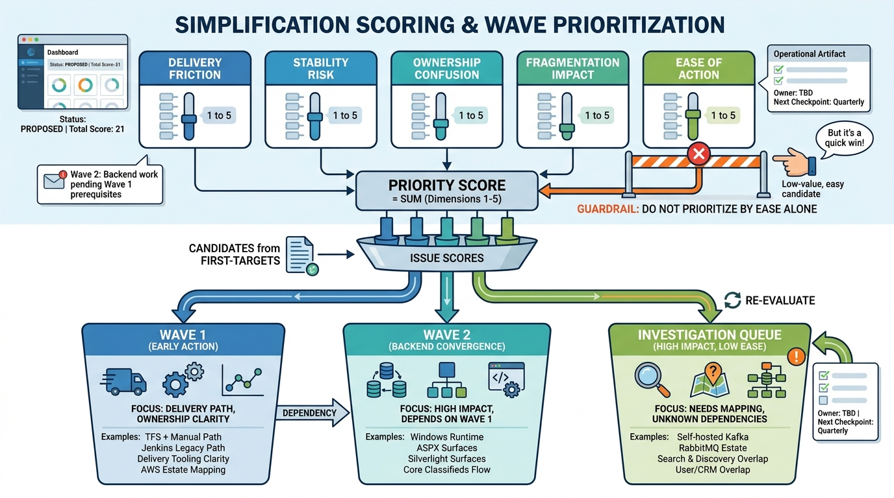

Roadmap and Targets
Prioritization and Waves: Scoring Method and the First Wave Plan

Image generated by Google Gemini (gemini-3-pro-image-preview)
Roadmap and Targets

Image generated by Google Gemini (gemini-3-pro-image-preview)